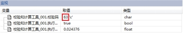

计算输入字符串的校验和。计算时以字节为单位进行计算。
| 分类 | 参数名称 | 参数描述 |
|---|---|---|
| 属性窗口 | 校验和有效位个数 | 计算出的校验和有几位是有效的。可根据实际需要进行选择，“低6位有效”(计算出的校验和为一个字节，这个字节中的低6位组成输出的校验和)，“低7位有效”（ 计算出的校验和为一个字节，这个字节中的低7位组成输出的校验和），“全部有效”（ 计算出的校验和为一个字节，这个字节中的8位组成输出的校验和）。 |
| 图像窗口 | 无 | 无 |
| 数据链 | 输入字符串 | 待计算校验码的输入字符串。 |
| 高级界面 | 无 | 无 |
| 分类 | 参数名称 | 参数描述（参数的含义） |
|---|---|---|
| 监视窗口 | 校验码 | 依据“检验码的有效位个数”计算出的校验码。 |
| 带校验码的字符串 | 字符串后面添加校验码。 | |
| 执行结果 | 工具执行结果。 | |
| 执行时间 | 工具执行时间。 | |
| 图像窗口 | 无 | 无 |
| 数据链 | 校验码 | 依据“检验码的有效位个数”计算出的校验码。与“监视窗口”中的校验码是同一个参数。 |
| 带校验码的字符串 | 字符串后面添加校验码。 |
无
该工具的输入类型是字符串String类型，输出是字符类型Char。
测试结果如图，其中输入的字符串为“12”，校验和为“第7位有效”，计算出的校验和为“63”。63为16进制的数。红框外边的‘c’表示16进制的63所对应的ASCII码。

参见“\Samples\校验和计算工具.gvp”。